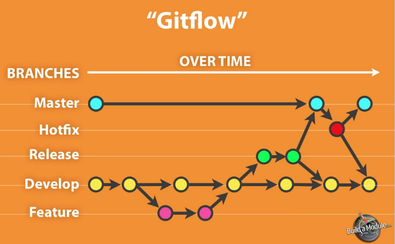

DIY Continuous Integration
With Drupal
Promet Webinar
Thursday, December 19, 2013
What I'm Gonna Hollar Bout!
- What is Continuous Integration and why should you care.
- Continuous Integration's 10 Principles
- Revision Control
- Build Automation
- Automate Deployment
- Self-Testing Build
- Testing in a Clone of Production
- Frequent Commits
- Code Consolidation
- Fast Builds
- Build Availability
- Test Result Availability
- Tools of the trade
- Git
- Vagrant
- Chef
- PHPUnit
- Jenkins
This session has three goals:
- explain what continuous integration means relative to Drupal.
- introduce the tools available to implement CI now.
- demonstrate what a CI implementation looks like in practice
BUT FIRST!
<SHAMELESS SELF PROMOTION>
About Me
Allan Chappell
Drupal Solutions Architect
Drupal User: 368854
Twitter: @general_redneck
Blog: GeneralRedneck.com
Projects
Headless Selenium
Views Natural Sort
User Merge
</SHAMELESS SELF PROMOTION>
Credits
Michelle Krejci
Thanks and props to my friend and co-worker for helping me get this presentation going and challenging me to make it better

Find Craychee on Drupal.org
What is Continuous Integration
And Why Should You Care
- Is it automated testing?
- Automated deployment?
- Test-driven development?
- ↝↝↝↝INSERT BUZZ WORD HERE↜↜↜↜
Not Exactly...
Continuous Integration can contain these practices, but each one individually don't make up the whole CI picture.
Continuous Integration touches all parties: clients, project managers, system admins, and developers, front and back end. If that’s you, you need to know what CI is.
10 Principles of Continuous Integration
- Revision Control
- Build Automation
- Automate Deployment
- Self-Testing Build
- Testing in a Clone of Production
- Frequent Commits
- Code Consolidation
- Fast Builds
- Build Availability
- Test Result Availability
Revision Control
- Version Branching should be minimized.
- Allows your developers to integrate their code easily.
- This is the base of what Continuous Integration is built around.
Build Automation
- A single command should have the capability of building a system.
- Should be buildable from a fresh checkout.
- Allows rapid development with a fast repeatable automated process.
Automate Deployment
- Build an environment on a trigger.
- Automated process is faster than manual.
- Less mistakes, always the same.
- Usually provides an automated contingency plan if it fails.
Self-testing Build
- When a build is created, tests should run to confirm that it behaves the way developers expect it to.
Testing in a Clone of Production
- Environmental changes can lead to failures.
- If a copy cannot be provided, a scalable version reduces risk.
- Use configuration management tools to configure all builds.
Frequent Commits
- Makes debugging easier.
- Better history.
- Easier to merge, move, add, and remove changes.
- Makes Code Consolidation easier.
Code Consolidation
- Every user should commit to a baseline once a day.
- Helps tests catch problems early.
- Less problems merging code.
- Developers should expect broken features. (process can manage this)
Fast Builds
- Developers shouldn't be kept waiting.
- Resources on automatic builds shouldn't be kept waiting.
Build Availability
- It is more time effective to have environments prebuilt and "checked out" than building on the fly.
- Builds available for Stakeholders is a must.
- Everyone should be able to access/use the latest build.
Test Result Availability
- Confidence in product.
- Provides a "Warranty".
- Developers can find problems earlier.
Tools of the Trade
Git

Courtesy of Joefleming.net
- Popular
- Free
- Use it!
Vagrant
- A way to take an environment and distribute it.
Chef
- One thing that makes Vagrant configurable.
- Allows version controlled configuration!
- Use to build like environments and quickly discern differences
PHPUnit
- Popular unit testing software.
- Allows functional and other types of testing.
- Can be used with other software like Selenium or curl to facilitate other testing.
Jenkins

- Continuous Integration Server software
- Jobs
- Hooks
- Consolidates and standardizes custom scripts
- Git Plugin
Demonstration
Principles Relationship with Tools and Processes
- Revision Control
- Git
- Gitflow
- Build Automation
- Build Script
- Automate Deployment
- Jenkins
- Build Script
- Self-Testing Build
- PHPUnit
- Build Script
- Testing in a Clone of Production
- Chef
- Vagrant
- Jenkins
Principles Relationship with Tools and Processes Continued
- Frequent Commits
- Git
- Gitflow
- Code Consolidation
- Git
- Gitflow
- Fast Builds
- Build Script
- Vagrant
- Jenkins
- Build Availability
- Jenkins
- Test Result Availability
- Jenkins
- PHPUnit
Links
Questions?
Don't be shy. Drop me a line and ask me questions now, today, tomorrow, or a month from now.
<SHAMELESS SELF PROMOTION>
Allan Chappell
Drupal User: 368854
Twitter: @general_redneck
Blog: GeneralRedneck.com